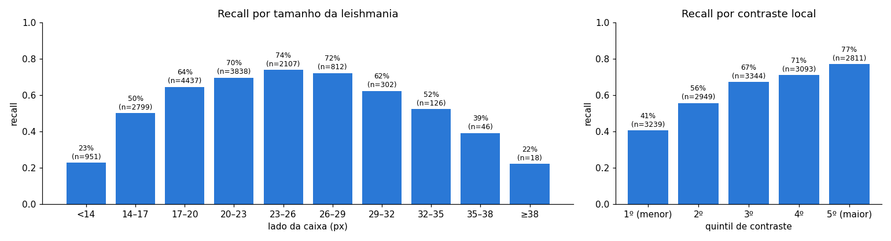
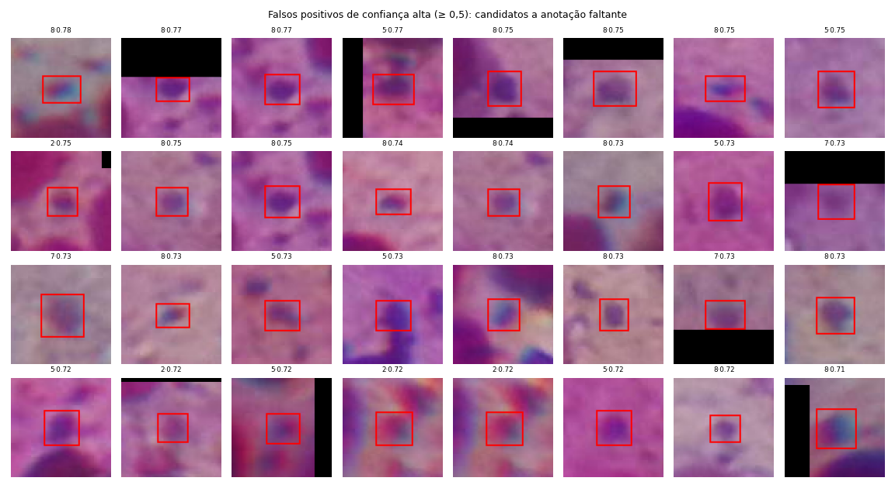
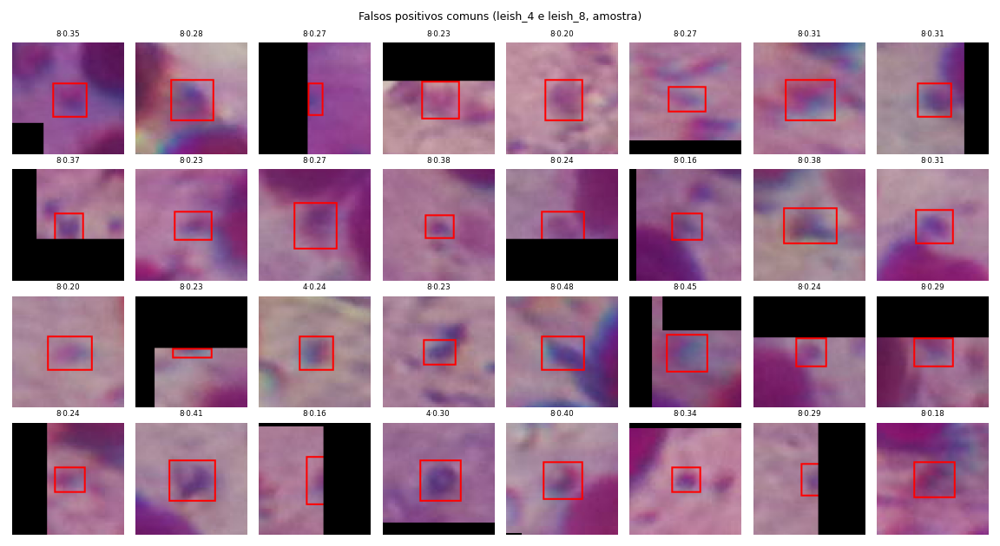
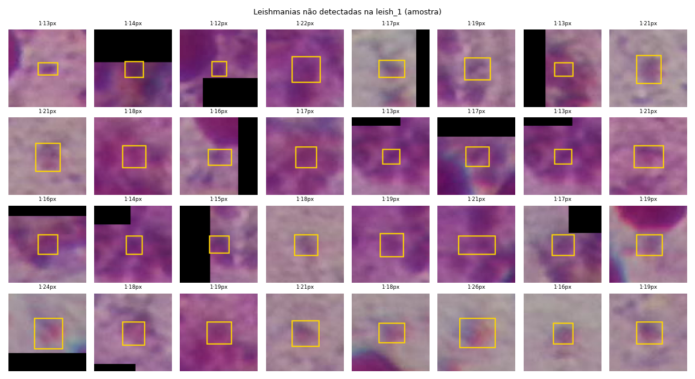
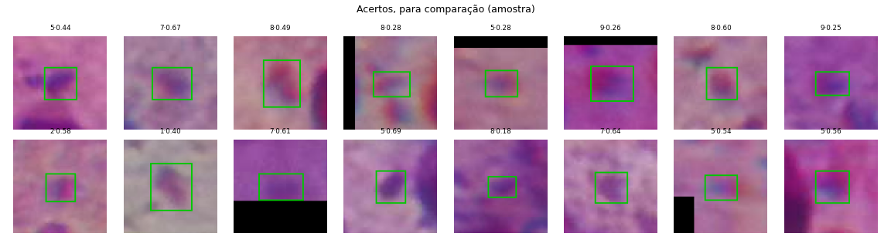

Diagnóstico — que erros o detector comete (modelos do exp15)
Objetivo: descobrir que tipo de erro o detector comete e em quais leishmanias, usando o modelo de melhor resultado até agora: os 6 modelos do exp15 (YOLO11l + hiperparâmetros do Optuna, mAP50 0,510), cada um nas 2 lâminas de teste do seu fold. Não treina nada; roda na GPU em ~1,5 minuto.
Como: predição em todos os recortes de teste; limiar de confiança de maior F1; casamento predição × anotação com IoU ≥ 0,5 (o mesmo critério do mAP50); medidas de cada caixa (tamanho, contraste local, distância até a máscara, borda do recorte, sobreposição com anotações inside-macrophage originais); classificação de cada erro.
Resumo
- Leishmanias pequenas são as mais perdidas. Das menores que 14 px, o modelo encontra 23%; entre 14 e 17 px, 50%; entre 20 e 29 px, 70–74%. As menores que 17 px são 24% de todas as anotadas.
- As caixas muito grandes também perdem, por anotação folgada. Acima de 29 px o recall cai (52% em 32–35 px), porque o modelo desenha uma caixa justa e a sobreposição com a anotada fica abaixo de 0,5. São 3,2% das anotadas, 75% delas na leish_5.
- Leishmanias apagadas também se perdem. Das 20% mais apagadas (menor contraste com o fundo), o modelo encontra 41%; das 20% mais nítidas, 77% (detalhes em Recall por tamanho e por contraste).
- A máscara preta não é fonte de erro. Falsos positivos e acertos ficam perto da máscara na mesma proporção (7% a até 12 px), e só 7 leishmanias foram perdidas por estarem cobertas por ela.
- As lâminas erram de jeitos diferentes. A leish_1 perde leishmanias (recall 0,28, precisão 0,75). A leish_8, a leish_4, a leish_2 e a leish_3 detectam coisas a mais (1,7, 1,4, 1,2 e 9,0 falsos positivos por leishmania anotada).
- 1.237 falsos positivos de confiança alta (≥ 0,5, sem anotação próxima), quase todos na leish_5, leish_8 e leish_2. A maioria tem a aparência de amastigota: podem ser anotações faltando. A lista está em
fp_conf_alta_para_revisar.csvpara revisão no CVAT. - O modelo é pouco confiante. O melhor F1 (0,541) fica no limiar 0,15; no limiar padrão de 0,5, o modelo encontra só 21% das leishmanias. Para a futura contagem de amastigotas, o limiar vai precisar ser calibrado.
Limiar de confiança
| Limiar | Acertos | Falsos positivos | Perdidas | Precisão | Recall | F1 |
|---|---|---|---|---|---|---|
| 0,10 | 10.482 | 14.243 | 4.954 | 0,424 | 0,679 | 0,522 |
| 0,15 (escolhido) | 9.564 | 10.357 | 5.872 | 0,480 | 0,620 | 0,541 |
| 0,20 | 8.621 | 7.967 | 6.815 | 0,520 | 0,558 | 0,538 |
| 0,30 | 6.764 | 4.775 | 8.672 | 0,586 | 0,438 | 0,502 |
| 0,50 | 3.311 | 1.444 | 12.125 | 0,696 | 0,214 | 0,328 |
Total de 15.436 leishmanias anotadas nas lâminas de teste (as lâminas que aparecem em 2 folds são contadas duas vezes, uma por modelo).
Recall por tamanho e por contraste
Para cada leishmania anotada nas lâminas de teste, verificamos se o modelo a encontrou ou não (limiar 0,15). Depois separamos as leishmanias em grupos e calculamos, em cada grupo, a porcentagem encontrada (o recall).
Por tamanho
Tamanho é o lado da caixa anotada, em pixels, no recorte de 512 px. Para caixas retangulares, usamos a raiz de largura × altura. As faixas são de 3 em 3 px; acima de 38 px há só 18 leishmanias, então essas ficam juntas.
| Tamanho da caixa | Leishmanias anotadas | O modelo encontrou | Perdidas por caixa mal localizada |
|---|---|---|---|
| menor que 14 px | 951 | 23% | 17% |
| 14 a 17 px | 2.799 | 50% | 8% |
| 17 a 20 px | 4.437 | 65% | 4% |
| 20 a 23 px | 3.838 | 70% | 3% |
| 23 a 26 px | 2.107 | 74% | 4% |
| 26 a 29 px | 812 | 72% | 9% |
| 29 a 32 px | 302 | 62% | 17% |
| 32 a 35 px | 126 | 52% | 30% |
| 35 a 38 px | 46 | 39% | 37% |
| 38 px ou mais | 18 | 22% | 56% |
As pequenas: quanto menor a leishmania, mais o modelo a perde; das menores que 14 px, encontra menos de 1 em cada 4, e 40% delas ele nem chega a ver. E elas não são raras: 24% das leishmanias anotadas têm menos de 17 px. Ampliar os recortes 2× faria uma leishmania de 12 px passar a ter 24 px, a faixa em que o modelo acerta mais (~74%).
As grandes: o recall também cai acima de 29 px, mas por outro motivo. Nessas faixas, a maior parte das perdidas é caixa mal localizada: o modelo vê a leishmania, mas desenha uma caixa de tamanho diferente, e a sobreposição (IoU) com a anotada fica abaixo de 0,5, então o acerto conta como erro. Olhando as caixas de 32 px ou mais, a maioria é uma amastigota isolada de ~20 px anotada com bastante folga; algumas são duas amastigotas juntas numa caixa só. São poucas (492 das 15.436 anotadas, 3,2%), e 75% delas são da leish_5, o que indica um estilo de anotação diferente nessa lâmina. Padronizar essas caixas na revisão das anotações recuperaria parte desses acertos.
Por contraste
Contraste mede o quanto a leishmania é mais escura que o fundo em volta dela:
- pegamos o brilho típico (mediana, em níveis de cinza) da área ao redor da caixa;
- pegamos os pixels mais escuros dentro da caixa (percentil 10), que correspondem ao núcleo;
- contraste = brilho do fundo − brilho do núcleo.
Uma leishmania escura sobre fundo claro tem contraste alto; uma apagada, quase da cor do fundo, tem contraste baixo.
Quintil: ordenamos todas as leishmanias pelo contraste e dividimos em 5 grupos de cerca de 20% cada. Os grupos não ficam exatamente iguais porque muitas leishmanias têm o mesmo valor de contraste.
| Grupo de contraste | Leishmanias anotadas | O modelo encontrou |
|---|---|---|
| 1º: as 20% mais apagadas | 3.239 | 41% |
| 2º | 2.949 | 56% |
| 3º | 3.344 | 67% |
| 4º | 3.093 | 71% |
| 5º: as 20% mais nítidas | 2.811 | 77% |
Entre as mais apagadas, o modelo acha cerca de 2 em cada 5; entre as mais nítidas, 3 em cada 4.

Tipos de erro (limiar 0,15, todas as lâminas)
| Erro | Quantidade | O que é |
|---|---|---|
| Falsos negativos: 5.872 (leishmanias anotadas não detectadas) | ||
| não vista | 2.601 (44%) | nenhuma predição em cima dela |
| vista, mas com confiança abaixo do limiar | 1.877 (32%) | o modelo achou, mas com confiança < 0,15 |
| caixa mal localizada | 931 (16%) | predição com IoU entre 0,1 e 0,5 |
| cortada na borda do recorte | 456 (8%) | leishmania na borda dos 512 px |
| coberta pela máscara | 7 (0,1%) | mais de 20% da caixa sob a máscara preta |
| Falsos positivos: 10.357 (detecções sem leishmania anotada) | ||
| fundo, confiança baixa | 8.212 (79%) | manchas roxas parecidas com amastigota, confiança < 0,5 |
| confiança alta, sem anotação | 1.237 (12%) | candidatos a anotação faltante (galeria abaixo) |
| localização | 877 (8%) | em cima de uma leishmania, mas com IoU < 0,5 |
| duplicata | 30 (0,3%) | segunda caixa na mesma leishmania |
| junto à máscara | 1 | caixa majoritariamente sobre a máscara preta |
Perfil por lâmina
| Lâmina | Precisão | Recall | FP por anotada | FP de conf. alta | Problema principal |
|---|---|---|---|---|---|
| leish_1 | 0,751 | 0,283 | 0,09 | 10 | perde leishmanias apagadas (galeria abaixo) |
| leish_2 | 0,331 | 0,593 | 1,20 | 227 | falsos positivos, muitos de confiança alta |
| leish_3 | 0,082 | 0,800 | 9,00 | 23 | falsos positivos (só 10 anotadas) |
| leish_4 | 0,226 | 0,417 | 1,42 | 5 | falsos positivos |
| leish_5 | 0,537 | 0,694 | 0,60 | 469 | misto; muitos de confiança alta |
| leish_7 | 0,644 | 0,687 | 0,38 | 98 | a melhor |
| leish_8 | 0,276 | 0,649 | 1,71 | 397 | falsos positivos, muitos de confiança alta |
| leish_9 | 0,564 | 0,524 | 0,40 | 8 | misto |
As lâminas que aparecem em 2 folds de teste (leish_1, 2, 7 e 8) são contadas duas vezes, uma por modelo.
Falsos positivos perto da máscara e sobre anotações dentro do macrófago
- A até 12 px da máscara preta ficam 7,2% dos falsos positivos e 7,7% dos acertos: a borda da máscara não gera detecções falsas.
- 3,0% dos falsos positivos (5,2% dos de confiança alta) coincidem com uma anotação
inside-macrophageoriginal. Ou seja, quase todos os falsos positivos de confiança alta estão fora da região do macrófago.
Galerias
Cada quadro mostra 64×64 px em volta da caixa, ampliado 2×. Título: número da lâmina · confiança (ou tamanho, para os não detectados).




O que isso indica
| Achado | O que fazer | Onde |
|---|---|---|
| Leishmanias pequenas são as mais perdidas | Ampliar o recorte (o exp14, com imgsz 1024, teve o melhor mAP50-95) | próxima ideia |
| Falsos positivos de confiança alta parecem amastigotas | Revisar as 1.237 caixas no CVAT | fp_conf_alta_para_revisar.csv |
Arquivos
| Notebook | diagnostico_erros_exp15.ipynb (para outro modelo, troque diretorio_exp e saida na célula de parâmetros) |
| Lista para revisão | fp_conf_alta_para_revisar.csv: lâmina, imagem do recorte, fold, confiança, caixa em pixels do recorte 512×512 (x1, y1, x2, y2) e sobreposição com inside-macrophage |
| Figuras | figuras/ |
| Log | execucao.log |